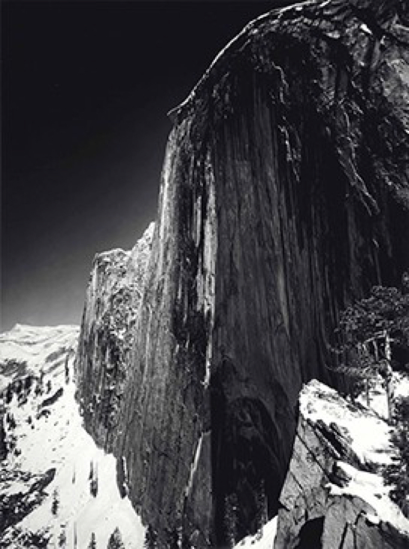
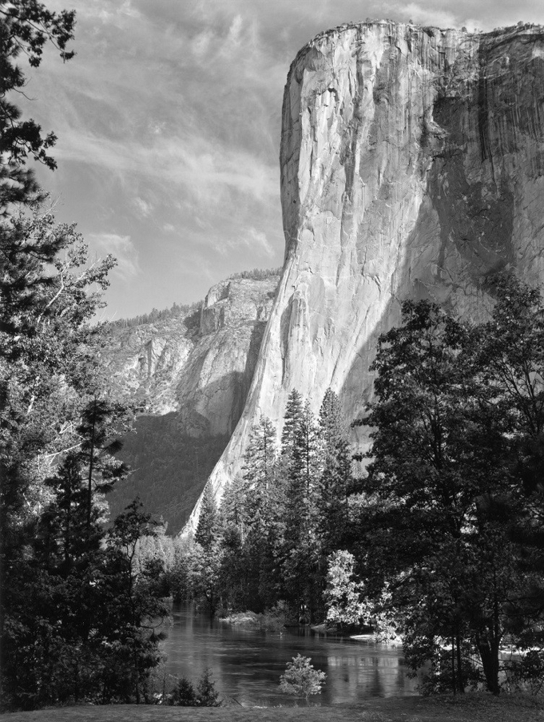

Ansel Adams

Ansel Adams was a revolutionary photographer and an environmentalist who was born in San Francisco. Adam’s early success as a photographer is said to come from his participation in the Sierra Club — a nascent conservation movement.
Paul Strand was a great influence to Adams in the 1920s, and led to Adam’s pursuing ‘straight photography’ which emphasised the clarity of the lens, and final prints looked as though they weren’t manipulated in the camera or dark room.

Adam’s used techniques of manipulation such as burning, dodging and the Zone System- which is used to change the tonality and allows the artist to create instead of record.
Adam’s was known for his technical knowledge and practice, more so than any photographer before him.
Adam’s wrote ten technical manuals on technical techniques such as controlling exposure and development, which are thought to be some of the most prominent books wrote on the matter.